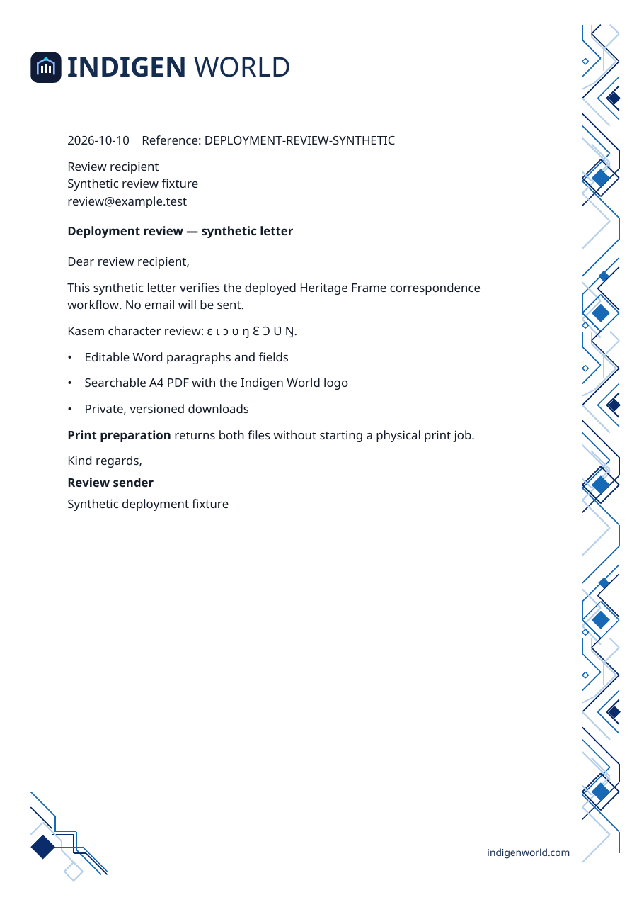
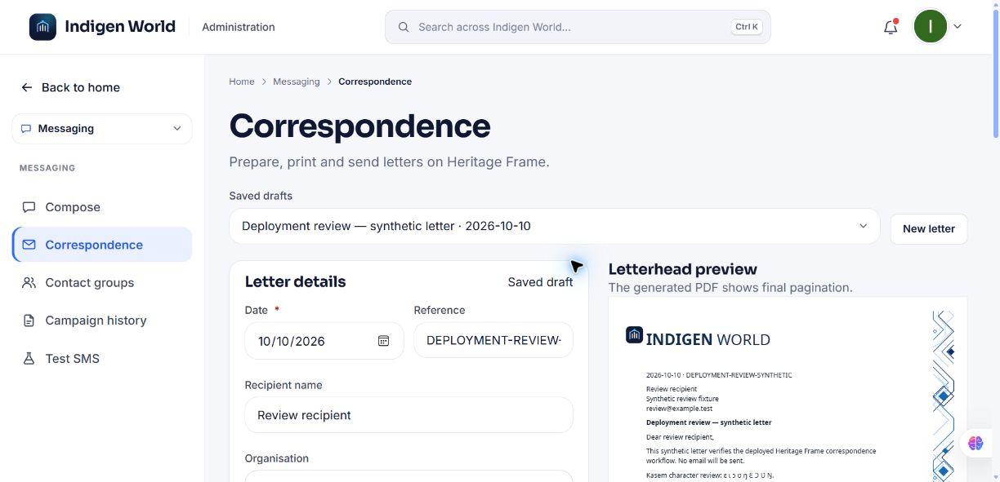

Indigen World correspondence now uses the reusable Heritage Frame design. It brings the familiar Indigen World logo and wordmark to a clean white A4 page, with navy, cobalt and pale blue geometric artwork.
Availability: deployed October 10, 2026 in Admin for authorised administrators. The private draft and cloud Word/PDF generation workflow has been verified with synthetic review data.

Staff can prepare a letter once and download an editable Word document and a print-ready PDF. The same date, recipient details, subject, message and supplied sender identity are used in both. Longer letters can continue across pages, with the branding repeated and room kept clear for the text.
The workflow supports paragraphs, lists, emphasis and links. Its bundled font preserves Kasem characters, including ɛ, ɩ, ɔ, ʋ and ŋ. Unsupported characters produce a clear generation error instead of silently disappearing.
Administrators can open Messaging → Correspondence, enter their letter details and save a private draft. They can preview the letterhead, choose Download Word or Download PDF, and use Print PDF to prepare both files and open the PDF viewer. Preparing print files does not send email or start a physical print job.

Application email routes now prepare the corresponding Heritage Frame PDF before using the existing email provider. The email remains readable in its body. When staff supply a separate complete formal letter, they can write a concise email introduction and attach the full letter.
The correspondence desk asks staff to review the recipient, email body and generated PDF before sending. Every generated document has a version and hash, so an attachment already sent is not silently replaced by later edits. Recipient-specific messages receive their own letters.
Drafts and files stay private. Only the authorised owner receives temporary download links. If document or attachment preparation fails, the email stops before sending and the draft remains available to retry. If the provider’s acceptance is uncertain, the system stops an automatic resend so the team can check the recorded message identifier.
No handwritten signature is added without an approved asset. Provider-managed Firebase authentication emails need a separate sender integration to support attachments. A separate staff correspondence assistant is not connected yet; an integration contract is prepared for the same authorised tools.
Verification includes one-page, multi-page and Kasem examples, offline attachment and retry checks, role/privacy tests, and live private draft and cloud document generation. No real-recipient test email or physical print job was performed. Blogger publication remains a separate step.